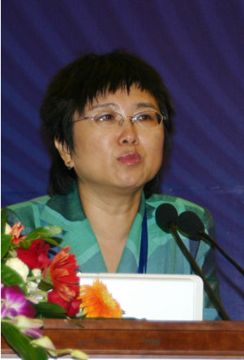
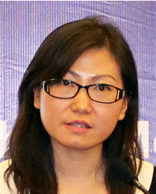
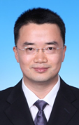
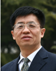

部分嘉宾介绍
赵梓森 |
简介：赵梓森(1932年2月4日—)，广东中山人，武汉邮电科学研究院高级中国工程院院士，国际电气电子工程师协会高光纤通信技术的主要奠基人和公认的开拓者，被誉为“中国光纤之父”。 |
韦乐平 |
简介：韦乐平，工信部科技委常务副主任，中国电信科技委主任，现任国家“863”计划信息技术领域第一届专家委员会委员、信息产业部通信科技委副主任、中国通信学会常务理事兼信息通信网络委员会主任委员和光通信委员会副主任委员。 |
|
刘德明 |
简介：刘德明，博士，华中科技大学教授，中国下一代互联网专家委专家，中国光学工程学会常务理事，下一代互联网接入系统国家工程实验室主任，武汉物联网产业协会秘书长。 刘德明教授长期从事光纤通信与传感教学科研工作，主要研究领域包括光通信与光网络、光纤传感网与物联网、光纤与光电子器件等。担任国防973项目首席，主持完成863项目、国家自然科学基金重点项目和重大项目课题等20多项国家级重大重点项目，取得多项重要成果，先后获得国家技术发明奖2项、省部级一等奖3项和二等奖4项以及日内瓦国际发明金奖1项和银奖2项，申请美国和中国发明专利118项(其中授权50项)，发表SCI收录期刊论文196篇，出版教材和学术著作5部。 报告题目：全光互连接入技术及其应用 |
|
唐雄燕 |
简介：唐雄燕，教授级高工，“新世纪百千万人才工程”国家级人选，享受政府特殊津贴专家。1994年在北京邮电大学获工学博士学位，1994-1998年在新加坡及德国从事高速光通信研究。1998年至今在电信运营企业从事研发和技术管理工作，现任中国联通网络技术研究院首席专家，中讯邮电咨询设计院副总工，兼任北京邮电大学兼职教授、博士生导师，工业和信息化部通信科技委委员兼传送与接入专家咨询组副组长，中国通信标准化协会TC10副主席。主要专业领域为宽带通信、IP网络、光纤传输、接入网、下一代网络、泛在网、未来网络等。主持了企业许多重大技术工作，还担任了国家科技重大专项、国家科技支撑计划、863计划、973计划等多个国家级科研课题的负责人。出版专著6部，发表技术论文150余篇，10多个项目获省部级以上奖励。 |
|
杨景 |
简介：杨景，现任中国移动通信研究院首席科学家, 中科院计算所博士导师，工信部经济专家委委员。杨景先生毕业于南京邮电大学，曾任美国UTStarcom公司首席科学家，南京邮电大学信息网络技术研究所副所长、总工程师。他从事通信信息行业的研究工作三十多年，在网络、软交换、分布式计算和流媒体等技术领域具有领先的研究成果，在系统建模、体系结构、产业分析和发展战略方面积累了丰富的经验。
|
| 
赵慧玲 |
简介：赵慧玲，1982年毕业于北京邮电大学,现任中国电信集团北京研究院副院长,曾任信息产业部电信传输研究所副所长。 |
|
张海懿 |
简介：张海懿，现任工业和信息化部电信研究院通信标准研究所(原传输所)传送与接入研究部主任。1996年毕业于北京邮电大学，获硕士学位。长期从事光传输系统以及电信传送网络体制标准、运营商的技术咨询等研究工作，具有丰富的主持大型网络设备技术评估和现网验收经验。已发表技术文章数十篇，曾获国家科技进步二等奖二次，中国通信标准化协会科学技术一等奖和二等奖各一次。目前主要从事高速光通信、OTN和PTN等光传送网技术和标准研究。 |
|
朱松林 |
简介：朱松林，中兴通讯股份有限公司有线产品经营部技术预研资深专家，负责的XG-PON1预研项目在英国电信完成了全球第一个商用实验局的开通，“十二五”863国家重大专项《光纤同轴混合接入技术研究》项目OFDM-PON子项目负责人。 |
|
Stefan Spaelter |
简介： |
| 
鲁林丽 |
简介：鲁林丽，现任爱立信(中国)通信有限公司云与IP传输产品线策略与运营总监。15年通信行业经验，主要专业领域为云技术，数据业务，移动回传及前传，光纤传输与接入，家庭网络，IP和网络虚拟化等。在专业领域拥有１７项国内发明专利授权，２项欧美专利授权。曾担任ITU-T FG编辑, 主导和参与CCSA通信行业标准３０多项．曾获多项ITU-T优秀文稿奖及国家科技进步一等奖，上海市科技进步一等奖 |
|
陆月明 |
简介：陆月明，北京邮电大学教授，博士生导师，毕业后在朗讯科技有限公司从事研究与开发工作，2003年进入北京邮电大学信息与通信工程学院从事教学和科研工作；2006年教育部新世纪人才获得者；可信分布式计算与服务教育部重点实验室学术委员会委员；从事网络规划、分布式计算等研究工作；承担和完成863、973等课题30多项，提交国家发明专利申请60项，获得国家发明专利授权20项，在国内外重要学术刊物上发表论文100多篇。 |
|
王光全 |
简介：教授级高级工程师，享受国务院政府特殊津贴。长期从事光通信网络的规划、设计和研究及技术管理工作，获得国家和省部级以上奖项30多项，获得国家发明专利多项。担任ITU-T标准编辑人，发表论文三十余篇 |
| 
李允博 |
简介：李允博，西北工业大学获得学士学位，原邮电科学研究院获得硕士学位，曾工作于电信传输研究所，2006年至今，工作于中国移动研究院从事100G传输和OTN技术研究工作。 |
|
马卫东 |
简介：光迅科技 |
|
陈德华 |
简介：陈德华，烽火通信科技股份有限公司 网络产出线技术总监，长期从事大容量超高速OTN/WDM 技术和产品的开发工作。。 |
|
舒德华 |
简介：美国Finisar公司，光通讯行业从业近二十年，先后在武汉邮电科学研究院(烽火科技)以及中兴通讯从事DWDM、SDH、PTN系统及光模块产品研发、产品管理、产品规划以及国际市场等工作,起草过多项国际国内标准，并获国家科技进步奖、邮电部科技进步奖及中国通讯标准化协会科技进步奖等奖励，现在菲尼萨光电通讯(上海)有限公司负责新产品的研发工作
|
|
李俊杰 |
简介：李俊杰，工学博士，高级工程师，现任中国电信股份有限公司北京研究院光通信研究中心主任，长期从事光通信网络技术与应用研究；现为中国通信学会高级会员、中国通信学会青年工作委员会委员、国际标准组织光互联论坛(OIF)董事。
|
|
陈岚 |
简介：陈岚，中科院微电子所研究员，博士生导师。中科院现有关键技术人才，国家物联网咨询委成员，国家新一代无线通讯国家科技重大专项(03)总体组专家，中科院感知中国新一代信息技术先导专项实施总体组专家。中国科学院微电子研究所所长助理，研究室主任，中国科学院EDA中心主任，中国物联网研究发展中心(筹)副主任，中芯国际产学研联合实验室 兼职研究员，法国玛丽居里大学客座教授，中国科学技术大学兼职教授。主要研究领域为先进芯片设计及EDA技术、物联网系统架构及芯片设计技术。申请国家发明专利100多项，发表文章40余篇。2012年国务院政府特殊津贴获得者，获国家科技进步二等奖，中科院杰出科技成就奖获，航天科技进步二等奖，北京市科技进步一等奖。 |
|
刘宁 |
简介：刘宁，华为技术有限公司高级研究工程师，新加坡南洋理工大学博士。近二十年光通信领域研发经验。研究内容包括高速光传输和光交换系统。目前担任城域高速光传输技术研究组组长，从事低成本集成光器件和新型城域传输技术的系统研究工作。加入华为之前，曾在上海贝尔阿尔卡特有限公司和新加坡南洋理工大学从事SDH/DWDM系统研发工作及光性能监测和自由空间光通信的研究工作。他一共发表学术论文30余篇，申请中国及国际专利十余篇。IEEE高级会员，多个国际著名学术期刊的审稿人，并在多个国际著名学术会议(ECOC，OECC等)中担任技术程序委员会委员。
|
| 
张宏科 |
简介：张宏科，教授、博士生导师，北京交通大学下一代互联网互联设备国家工程实验室主任，主要从事未来信息网络关键理论与技术的研究工作，先后在IEEE Transactions on. 等国内外重要刊物和学术会议上发表论文多篇，出版《路由器原理与技术》等理论与技术书籍多部。目前，作为首席科学家主持国家973项目“智慧协同网络理论基础研究”的研究工作。
|
|
王泰立 |
简介：王泰立，中兴通讯股份有限公司高工
|

胡保民 |
简介：胡保民博士，武汉长光科技有限公司副总经理。先后主持和承担10余项国家和省市级项目。曾获“湖北省技术发明一等奖”、“中国广播电视协会广播电视科技贡献奖”，并入选“3551光谷人才”和首批“湖北省产业教授”。
|
|
王廷云 |
简介：王廷云，教授，博士生导师，上海大学通信与信息工程学院，执行院长，上海市特种光纤与光接入网重点实验室－省部共建国家重点实验室培育基地主任。主要从事特种光纤研究与制备、光纤传感、纳米光子学、光互连与光纤器件及系统等方面的研究工作。在材料集成特种光纤、量子点放大光纤、光印制板互连等方面有较深的研究和经验积累。王廷云教授曾任上海市科技预见专家、国家重点实验室评估专家、国家自然基金委信息学部评审专家等； 是通信学会高级会员，任《光电子·激光》常务副主编、Opto-Electronics Letters常务副主编、《中国激光》常务编委等。
|
|
张昕 |
简介：长芯盛(武汉)科技有限公司销售总监 |
|
杨国良 |
简介：博士，现任职于广州睿哲网络科技有限公司CTO，曾在中国电信集团广州分研究院从事网络规划和新
技术应用研究16年，主要研究方向为IPv6、QoS、云计算、流量分析等，对运营商网络规划建设和新技术发
展趋势有着十多年的经验积累，先后参与“下一代互联网业务应用示范项目”、“网络化操作系统示范应
用工程建设”、“新型宽带移动IP承载网架构研究、关键技术研发与试验验证”等国家重大项目，目前重点
推进国家发改委下一代互联网技术研发、产业化和规模商用专项工作，先后在国内外核心刊物发表论文十余篇，提出FAST6(Fundamental Architecture of Services Provider's network Transitioning to IPv6)和SPACE6(Service
Provider’s Application Cloud-based Engine for IPv6 Transition)等多个IPv6过渡技术的国际标准草案，出版专著《IPv6技术、部署与业务应用》，并拥有多个已经应用到中国电信网络设备上的发明专利。 拟发言题目：下一代互联网应用发展新趋势(The new trend of the development of IPv6 content source) 摘要：全球下一代互联网技术应用发展趋势和遇到的问题，国家对下一代互联网重视和发展引导思路， 下一代互联网能否快速兴起的关键是新兴应用和同步IPv4互联网内容源，如何实现丰富IPv6内容 源，如何实现IPv6内容源的平滑扩增，新兴应用如果通过IPv6兼容现有用户群和未来IPv6用户群。 |
|
付松年 |
简介：付松年，博士，华中科技大学教授，目前从事致力于高速数字相干光通信研究工作。目前主持及参与国家973项目，国家863项目，重大仪器专项及国家自然科学基金项目。2013年，获得湖北省“楚天学者”特聘教授荣誉。
|
|
胡卫生 |
简介：胡卫生，上海交通大学教授，毕业于清华大学本科(86)、北京科技大学硕士(89)和南京大学博士(97)，武汉科技大学助教和讲师(89-94)，上海交通大学博士后(97-99)，上海交通大学教授(1997-)、电信学院责任教授(05-)、上海交通大学特聘教授(09-)。先后兼任“区域光纤通信网与新型光通信系统”国家重点实验室主任和副主任，国家863计划“中国高速信息示范网”和“高性能宽带信息网”重大专项总体组专家，上海市技术预见专家等。在区域光纤通信网与新型光通信系统国家重点实验室，在中国光通信技术领域，主持和参加两个国家重大专项和多个重大项目，做出了重要贡献，在全光网及自动交换光网研究方向，取得创新成果。
|
|
娄淑琴 |
简介：北京交通大学教授，1986年毕业于哈尔滨工业大学光电子技术专业，获工学学士学位； 1989年毕业于哈尔滨工业大学电子物理与器件专业，获工学硕士学位； 2005年毕业于北京交通大学通信与信息系统专业，获工学博士学位； 1998年以后在北京交通大学电子信息学院任教。
|
|
邱昆 |
简介：邱昆，男，1964年8月生，电子科技大学通信学院博导，教授。现任宽带光纤传输与通信系统技术国家重点实验室主任，是中国电子学会青年委员会委员，四川省科技青年联合会副主席。
|
|
谭小地 |
简介：谭小地，北京理工大学光电学院国家“千人计划”特聘教授。主要研究方向为信息光学。主要研究内容包括：波动光学、光学全息、光学 测量、图像处理、图像加密、光学信息处理、光子晶体、液晶显示技术、三维立 体显示技术、以及数值计算和计算机控制等。长期从事光学理论教学、科研及产 品开发工作。在光学信息处理、光信息存储、光学信息显示和光学测量等领域有 着长期的理论研究和产品开发经验。曾在日本 Sony 公司任高级技术分析师(Senior Technology Analyst)、主任研究 员(Distinguished Engineer)、光学技术经理(Optical Technology Manager)，主持过 三维立体显示技术和液晶显示技术及产品的开发工作。担任面向全公司职员的 “光电子学基础及应用”课程教师，与清华大学联合培养博士研究生。曾在日本 Optware 公司任高级工程师(Senior Engineer)，主持开发过新型全息式存储光盘技 术。出国前曾在西安工业大学任讲师，主授《物理光学》和《傅立叶光学导论》 课程。担任国家外国专家局重点引智项目评审专家。国际工程光学学会(SPIE)会员、 美国光学学会(OSA)会员、中国光学工程学会理事、中国光学学会高级会员、全 息与光信息处理专业委员会会员，以及国际学术会议的组委会成员。
|
|
陈大鹏 |
简介：中科院微电子所。1968年10月出生，1990年毕业于合肥工业大学化学系高分子专业；1995年于中国科学技术大学获高分子化学理学硕士学位；2000年于中国科学技术大学获核技术及应用工学博士学位。从硕士研究生开始即从事新型X射线光刻胶及下一代光刻技术工艺的研究，硕士论文题目为《新型X射线光刻胶的研制》，博士论文题目为《利用同步辐射的微细加工技术》，在同步辐射(X射线)光刻及微细加工领域作过多年应用技术研究。
|
|
谢辉 |
简介：谢辉，男，出生于1970年08月湖南省，天津大学机械学院教授、博导，内燃机燃烧学国家重点实验室副主任。 |
|
罗涛 |
简介：罗涛，男，博士，IEEE会员，北京邮电大学信息与通信工程学院副教授，博士生导师。2006年美国密西根大学访问学者。近年来一直从事宽带无线移动通信系统及网络方面的研究工作，主持和参与国家863、自然科学基金(NSFC)等科研项目及与企业合作研发项目多项，在国内外重要学术刊物及会议上发表学术论文50余篇，主编、参编专著和译著各3部，教材和教辅各1部，提交技术发明专利15项，其中已授权6项。研究方向为宽带无线通信理论与网络技术，包括OFDM、MIMO、WAVE、协同通信及认知无线电技术等。目前承担NSFC项目“认知无线电系统中多用户协作分集理论及关键技术研究”的研究工作。
|
|
郭磊 |
简介：毕业于电子科技大学通信与信息系统专业，导师为李乐民院士。国家高层次人才特殊支持计划(万人计划)第一批青年拔尖人才、教育部新世纪优秀人才、辽宁省百千万人才工程、首批东北大学高层次人才培养计划入选者、霍英东青年教师基金获得者。获辽宁省自然科学学术成果一等奖6次，获国际通信、电路和系统会议最佳论文奖1次，获沈阳市五四青年奖章，四川省优秀博士学位论文。
|